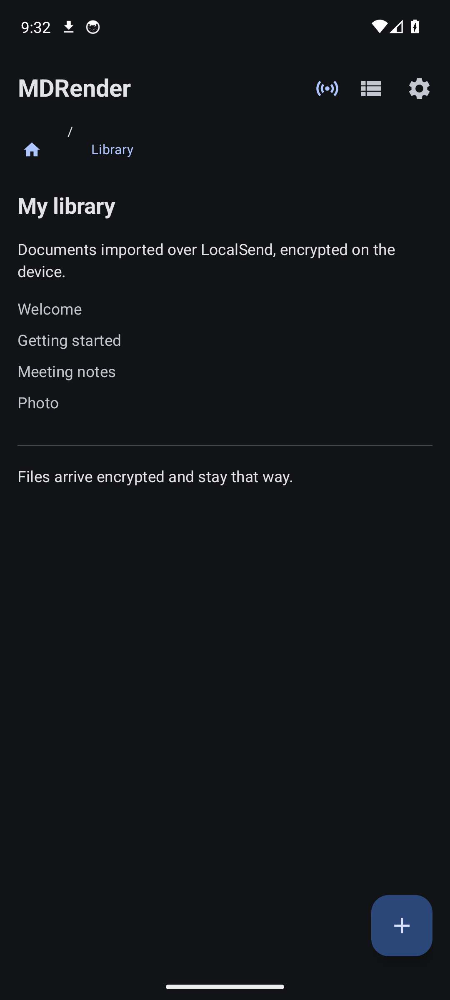
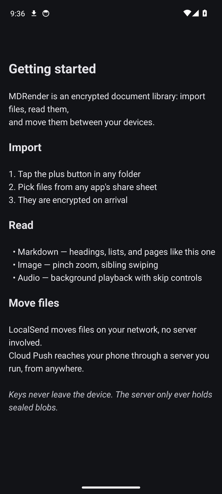
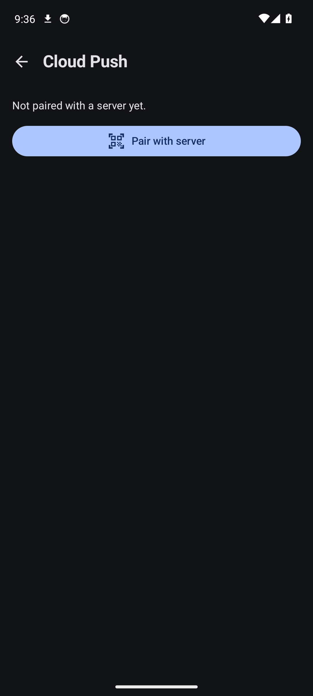

The reader that needs no server.
Everything MDRender does lives on your phone: an encrypted library, viewers for Markdown, images, text, and audio, and direct transfers with devices on your network. A server is optional — it only adds the ability to push files in from anywhere, with the cloud push master delivering the wake-up to your phone.
Every release ships versioned APKs and source — build a signed install in one command, or sign the release APK with your own keystore.


Works without the server
The server is one optional feature — Cloud Push. Cut the network entirely and the app still opens, reads, plays, locks, and transfers.
- Encrypted storage
- Files are stored encrypted at rest with AES-256 through the Android Keystore; large files live as encrypted blobs on disk, not in the database. A per-file toggle is there for compatibility when you need it.
- File browser
- Folders with breadcrumbs, grid or list view, import from any app's share sheet, multi-select move and delete with conflict handling, thumbnails, and a five-second undo before anything is really gone.
- Viewers
- Markdown renders with a table of contents driven by each folder's
INDEX.md; images pinch and swipe; text opens raw; audio plays in the background with lock-screen controls, skip buttons, and a headphones-only mode. - LocalSend, built in
- An in-app LocalSend server discovers phones and computers on your network and transfers directly — PIN-protected, with skip, replace, or rename on conflicts. No internet, no account, no server in the middle.
- Lock and hide
- App lock on background or screen-off, biometric or PIN on resume, secure screen flag against screenshots in recents, and hidden folders behind a gesture you configure yourself — the shipped default is documented, so set a custom tap sequence for anything that matters.
- Share in and out
- Import from other apps through the share sheet, send files back out plain or as an encrypted blob, with a warning when the file came from a hidden folder.
On the phone
INDEX.md opens as a
table of contents, chapter links included.
Install it
Releases are cut automatically on every push: an APK, the server image, and every client package attached to one GitHub Release. CI has no keystore, so release APKs are unsigned — sign one with your own keystore, or build a ready-to-install debug APK from source.
# clone and install a signed debug build
git clone https://github.com/githuba42r/mdrender
cd MDRender
./gradlew assembleDebug
adb install app/build/outputs/apk/debug/app-debug.apkAdd Cloud Push when you want it
Pair the app with a server — yours, a friend's, one per office — and
mdrender-send or the web console can hand files to your phone from
anywhere. The app keeps its keys in the Keystore; with encryption mode on the
server only ever sees sealed blobs — not the file contents, names,
folders, or types. Nothing changes about how the app works when it's
unpaired.